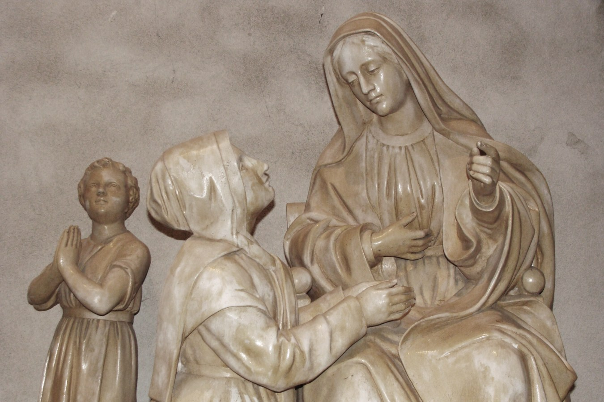
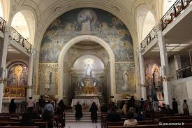
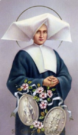
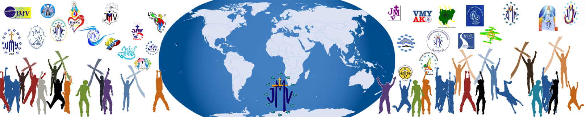

La Jeunesse Mariale Vincentienne
notre histoire
Tout a commencé par un appel… un OUI… un engagement pour l’éternité … En juillet 1830, à la Chapelle Notre-Dame de la Médaille Miraculeuse (140 rue du Bac, à Paris), Marie apparaît à sœur Catherine Labouré, une jeune en formation au séminaire des Filles de la Charité. Elle lui demande la création d’une Association Mariale « Les Enfants de Marie », afin de regrouper les jeunes et leur donner une éducation humaine et chrétienne selon l’esprit marial , puis, lors d’une deuxième apparition en novembre de la même année, de faire frapper une médaille. Celle-ci sera ensuite appelée « médaille miraculeuse ». " Je veux qu'une Confrérie des Enfants de Marie soit fondée. J'accorderais beaucoup de grâce..."
Catherine transmet les demandes de Marie à son confesseur, le Père Aladel. Tous deux font partie de congrégations fondées au XVIIe siècle par Saint Vincent de Paul : les Filles de la Charité (fondées avec Sainte Louise de Marillac) et les lazaristes. L’Association demandée par Marie à Catherine est fondée par le Père Aladel : elle naît donc dans la famille de Saint Vincent de Paul.
Qui est Catherine Labouré ?
Sœur Catherine Labouré, née Zoé Labouré le 2 mai 1806 à Fain-lès-Moutiers en France et décédée le 31 décembre 1876 à Paris. Membre de la congrégation des Filles de la charité, elle a fait part à son confesseur, le père Aladèle, des apparitions de la Vierge Marie qu'elle dit avoir eues en juillet, novembre et décembre 1830 durant son noviciat (appelé séminaire chez les Filles de la charité) en la chapelle de son couvent de la rue du Bac à Paris. Catherine est béatifiée en 1933, puis canonisée en 1947 par Pie XII. La fête liturgique de Sainte Catherine Labouré est commémorée par la famille vincentienne le 28 novembre
Le développement du mouvement :
Les premiers groupes des Enfants de Marie ont été organisés dans divers endroits de la France. Entre 1835 et 1847, les 15 premiers groupes ont été formés. La première Enfant de Marie s’appelait Benigne Hairon; elle venait d'un internat tenu par les Filles de la Charité. Les premières réunions des Enfants de Marie s’appelaient « Cénacles Marials ». Le Supérieur Général, Père Etienne, a obtenu l'approbation Pontificale, du Pape Pie IX , le 20 juin 1847.
De 1848 à 1870, l'expansion de l’association en dehors de la France a gagné plusieurs pays de l'Europe et d'autres continents: comme en Asie: les Philippines, le Liban; en Afrique: l’Égypte; ainsi que plusieurs pays de l'Amérique du Sud. 338 Centres en plein fonctionnement ont été comptés. Le 19 septembre 1876, le Pape Pie IX signa un Bref permettant aux jeunes non élèves des Écoles des Filles de la Charité, d'appartenir à l'Association.